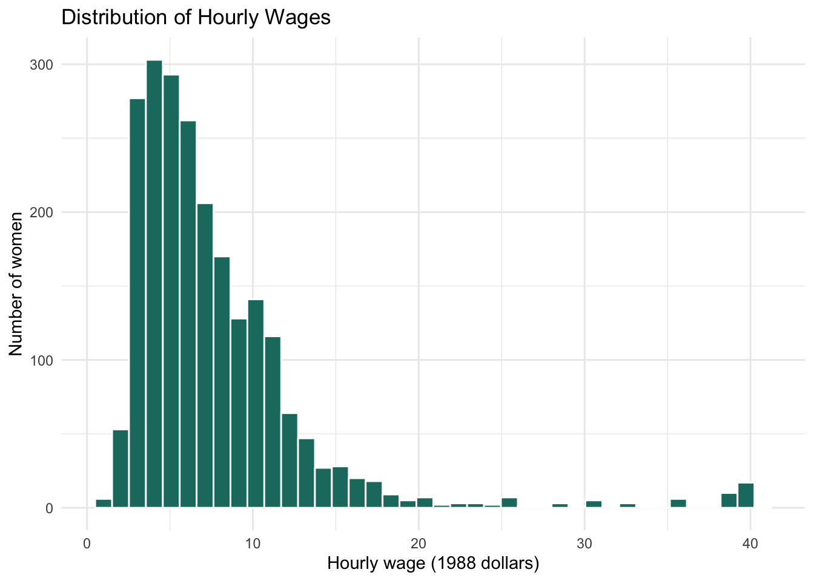
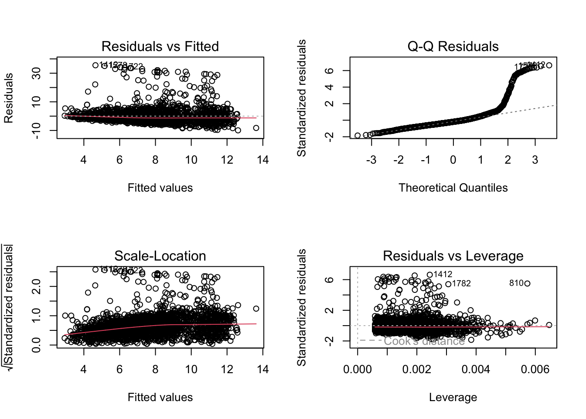
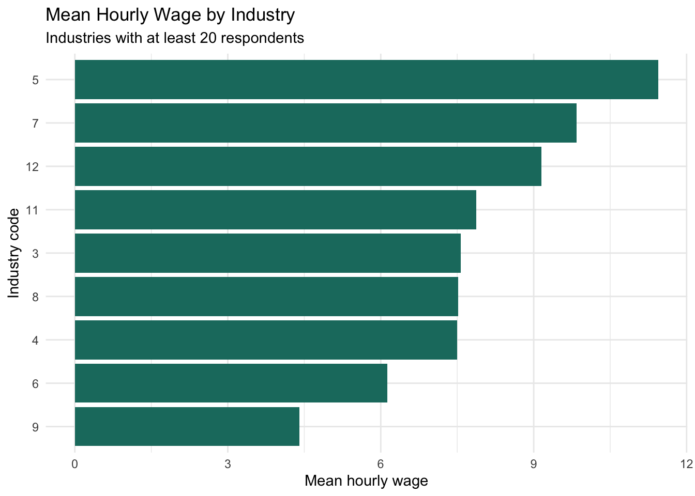

Warning: package 'modelsummary' was built under R version 4.5.22 Review of Regression
Data for this chapter: nlsw88.dta
Data file needed
Copy nlsw88.dta into this project folder before rendering. This is the same dataset you will use for the Module 2 content review.
Multilevel models are an extension of regression, so it is worth making sure the foundation is solid before we build on it. This chapter reviews ordinary least squares regression and then, at the end, shows where it starts to fail. That failure is the reason the rest of this book exists.
The data are 2,246 women from the 1988 round of the National Longitudinal Survey of Mature and Young Women, administered by the U.S. Bureau of Labor Statistics. Public data are available at https://nlsinfo.org.
Rows: 2,246
Columns: 17
$ idcode <dbl> 1, 2, 3, 4, 6, 7, 9, 12, 13, 14, 15, 16, 18, 19, 20, 22,…
$ age <dbl> 37, 37, 42, 43, 42, 39, 37, 40, 40, 40, 39, 40, 40, 40, …
$ race <dbl+lbl> 2, 2, 2, 1, 1, 1, 1, 1, 1, 1, 1, 1, 1, 1, 1, 1, 1, 1…
$ married <dbl+lbl> 0, 0, 0, 1, 1, 1, 0, 1, 1, 1, 1, 1, 1, 0, 1, 1, 1, 1…
$ never_married <dbl> 0, 0, 1, 0, 0, 0, 0, 0, 0, 0, 0, 0, 0, 0, 0, 0, 0, 0, 0,…
$ grade <dbl> 12, 12, 12, 17, 12, 12, 12, 18, 14, 15, 16, 15, 15, 15, …
$ collgrad <dbl+lbl> 0, 0, 0, 1, 0, 0, 0, 1, 0, 0, 1, 0, 0, 0, 0, 0, 1, 1…
$ south <dbl> 0, 0, 0, 0, 0, 0, 0, 0, 0, 0, 0, 0, 0, 0, 0, 0, 0, 0, 0,…
$ smsa <dbl+lbl> 1, 1, 1, 1, 1, 1, 1, 1, 1, 1, 1, 1, 1, 1, 1, 1, 0, 1…
$ c_city <dbl> 0, 1, 1, 0, 0, 0, 1, 0, 0, 0, 0, 0, 0, 0, 0, 0, 0, 0, 1,…
$ industry <dbl+lbl> 5, 4, 4, 11, 4, 11, 5, 11, 11, 11, 11, 11, 6, …
$ occupation <dbl+lbl> 6, 5, 3, 13, 6, 3, 2, 2, 3, 1, 1, 1, 5, …
$ union <dbl+lbl> 1, 1, NA, 1, 0, 0, 1, 0, 0, 0, 1, 0, 0, …
$ wage <dbl> 11.739125, 6.400963, 5.016723, 9.033813, 8.083731, 4.629…
$ hours <dbl> 48, 40, 40, 42, 48, 30, 40, 45, 8, 50, 16, 40, 40, 40, 4…
$ ttl_exp <dbl> 10.333334, 13.621795, 17.730770, 13.211537, 17.820513, 7…
$ tenure <dbl> 5.3333335, 5.2500000, 1.2500000, 1.7500000, 17.7500000, …2.1 Preparing the variables
The dummy variables here are coded 1 for yes and 0 for no. Race is coded 1 for White, 2 for Black, and 3 for Other. That coding is a poor measurement approach from a QuantCrit standpoint, collapsing enormously different populations into a residual “other” category, but it was typical of 1988 and it is what the file contains. Keep the limitation in mind when interpreting anything involving race.
nlsw <- nlsw |>
mutate(
collgrad_f = factor(collgrad, levels = c(0, 1),
labels = c("Not college grad", "College grad")),
race_f = factor(race, levels = c(1, 2, 3),
labels = c("White", "Black", "Other")),
union_f = factor(union, levels = c(0, 1),
labels = c("Non-union", "Union"))
)
table(nlsw$collgrad_f)
Not college grad College grad
1714 532 table(nlsw$race_f)
White Black Other
1637 583 26 2.1.1 A note on missing data
nlsw |>
summarize(across(c(wage, age, ttl_exp, collgrad, union, hours, industry),
~ sum(is.na(.)))) |>
pivot_longer(everything(), names_to = "variable", values_to = "n_missing")# A tibble: 7 × 2
variable n_missing
<chr> <int>
1 wage 0
2 age 0
3 ttl_exp 0
4 collgrad 0
5 union 368
6 hours 4
7 industry 14Some variables here have missing values, and union in particular has a substantial number. Resist the urge to run na.omit() on the whole dataset. That would drop any woman missing a response on any variable, including ones you are not using, and can silently discard hundreds of cases you had no reason to lose.
lm() handles this for you by dropping incomplete cases on a model-by-model basis. The consequence is that different models in this chapter may be fit on slightly different subsamples, which matters when you compare them. Watch the N in the results tables.
2.2 A single predictor
describe(nlsw$wage) vars n mean sd median trimmed mad min max range skew kurtosis se
X1 1 2246 7.77 5.76 6.27 6.8 3.4 1 40.75 39.74 3.09 12.84 0.12ggplot(nlsw, aes(x = wage)) +
geom_histogram(bins = 40, fill = "#1a7a6e", color = "white") +
labs(title = "Distribution of Hourly Wages",
x = "Hourly wage (1988 dollars)", y = "Number of women") +
theme_minimal()
Wages are right-skewed, which is nearly always true of earnings data. A small number of high earners pull the mean above the median. This is worth noticing before modeling, because it affects how well a linear model will describe the data and how much influence those high earners will have on the estimates.
Call:
lm(formula = wage ~ ttl_exp, data = nlsw)
Residuals:
Min 1Q Median 3Q Max
-8.502 -2.911 -1.295 1.308 35.370
Coefficients:
Estimate Std. Error t value Pr(>|t|)
(Intercept) 3.61249 0.33935 10.64 <2e-16 ***
ttl_exp 0.33143 0.02541 13.04 <2e-16 ***
---
Signif. codes: 0 '***' 0.001 '**' 0.01 '*' 0.05 '.' 0.1 ' ' 1
Residual standard error: 5.55 on 2244 degrees of freedom
Multiple R-squared: 0.07048, Adjusted R-squared: 0.07006
F-statistic: 170.1 on 1 and 2244 DF, p-value: < 2.2e-16The coefficient on ttl_exp is the estimated difference in hourly wage associated with one additional year of total work experience.
Three habits of careful interpretation are worth stating explicitly. First, this is an association, not an effect. Causality is a function of research design, not of analysis, and nobody randomly assigned these women to accumulate different amounts of work experience. Second, the intercept is the predicted wage when experience equals zero, which here describes a woman with no work history at all. That is a real if unusual case, so the intercept is at least interpretable. Third, R^2 is the proportion of variance in wages the model accounts for. It is not the probability the model is right, and a model with low R^2 can still contain a coefficient worth knowing about.
2.3 Building up a series of models
m2 <- lm(wage ~ ttl_exp + age, data = nlsw)
m3 <- lm(wage ~ ttl_exp + age + collgrad_f, data = nlsw)
summary(m3)
Call:
lm(formula = wage ~ ttl_exp + age + collgrad_f, data = nlsw)
Residuals:
Min 1Q Median 3Q Max
-9.917 -2.689 -1.021 1.086 35.550
Coefficients:
Estimate Std. Error t value Pr(>|t|)
(Intercept) 7.92690 1.46037 5.428 6.31e-08 ***
ttl_exp 0.30869 0.02491 12.391 < 2e-16 ***
age -0.12252 0.03731 -3.284 0.00104 **
collgrad_fCollege grad 3.24134 0.26799 12.095 < 2e-16 ***
---
Signif. codes: 0 '***' 0.001 '**' 0.01 '*' 0.05 '.' 0.1 ' ' 1
Residual standard error: 5.366 on 2242 degrees of freedom
Multiple R-squared: 0.132, Adjusted R-squared: 0.1308
F-statistic: 113.6 on 3 and 2242 DF, p-value: < 2.2e-16Watch what happens to the experience coefficient as age and college graduation enter the model. Experience and age are correlated, since older women have had more time to accumulate work history, so some of what the first model attributed to experience was partly age. This is what “controlling for” means in practice, and it is why a coefficient is a statement about a particular model rather than a property of the world.
Notice also how R handles the factor. It picks a reference category, here “Not college grad,” and the coefficient describes the difference from that reference. Had collgrad been a three-category variable left as 1, 2, 3, we would have gotten a single nonsensical slope instead of two comparisons.
2.4 An interaction
Does the return to work experience depend on age?
Call:
lm(formula = wage ~ ttl_exp * age + collgrad_f, data = nlsw)
Residuals:
Min 1Q Median 3Q Max
-9.535 -2.646 -1.027 1.064 35.940
Coefficients:
Estimate Std. Error t value Pr(>|t|)
(Intercept) 1.701472 4.151041 0.410 0.6819
ttl_exp 0.816992 0.318256 2.567 0.0103 *
age 0.034692 0.104979 0.330 0.7411
collgrad_fCollege grad 3.229193 0.268005 12.049 <2e-16 ***
ttl_exp:age -0.012788 0.007982 -1.602 0.1093
---
Signif. codes: 0 '***' 0.001 '**' 0.01 '*' 0.05 '.' 0.1 ' ' 1
Residual standard error: 5.364 on 2241 degrees of freedom
Multiple R-squared: 0.133, Adjusted R-squared: 0.1314
F-statistic: 85.92 on 4 and 2241 DF, p-value: < 2.2e-16The interaction term asks whether the wage return to an additional year of experience is different for older women than for younger women. When an interaction is present, the main effects are no longer “the effect of experience” in general. They are the effect of experience when age equals zero, which is not a meaningful case here. This is the standard argument for centering continuous predictors before interacting them:
nlsw <- nlsw |>
mutate(
age_c = age - mean(age, na.rm = TRUE),
ttl_exp_c = ttl_exp - mean(ttl_exp, na.rm = TRUE)
)
m5 <- lm(wage ~ ttl_exp_c * age_c + collgrad_f, data = nlsw)
summary(m5)
Call:
lm(formula = wage ~ ttl_exp_c * age_c + collgrad_f, data = nlsw)
Residuals:
Min 1Q Median 3Q Max
-9.535 -2.646 -1.027 1.064 35.940
Coefficients:
Estimate Std. Error t value Pr(>|t|)
(Intercept) 7.024480 0.130715 53.739 < 2e-16 ***
ttl_exp_c 0.316293 0.025352 12.476 < 2e-16 ***
age_c -0.125609 0.037344 -3.364 0.000782 ***
collgrad_fCollege grad 3.229193 0.268005 12.049 < 2e-16 ***
ttl_exp_c:age_c -0.012788 0.007982 -1.602 0.109281
---
Signif. codes: 0 '***' 0.001 '**' 0.01 '*' 0.05 '.' 0.1 ' ' 1
Residual standard error: 5.364 on 2241 degrees of freedom
Multiple R-squared: 0.133, Adjusted R-squared: 0.1314
F-statistic: 85.92 on 4 and 2241 DF, p-value: < 2.2e-16The interaction coefficient is identical in the two models. What changes is the interpretability of everything else. In the centered version, the experience coefficient is the return to experience for a woman of average age, which is a quantity you can put in a sentence.
2.5 Comparing the models
modelsummary(
list("M1" = m1, "M2" = m2, "M3" = m3, "M4: Interaction" = m4),
stars = c("*" = .05, "**" = .01, "***" = .001),
gof_map = c("nobs", "r.squared", "adj.r.squared", "aic", "bic"),
title = "OLS models predicting hourly wages"
)| M1 | M2 | M3 | M4: Interaction | |
|---|---|---|---|---|
| * p < 0.05, ** p < 0.01, *** p < 0.001 | ||||
| (Intercept) | 3.612*** | 8.649*** | 7.927*** | 1.701 |
| (0.339) | (1.506) | (1.460) | (4.151) | |
| ttl_exp | 0.331*** | 0.342*** | 0.309*** | 0.817* |
| (0.025) | (0.026) | (0.025) | (0.318) | |
| age | -0.132*** | -0.123** | 0.035 | |
| (0.038) | (0.037) | (0.105) | ||
| collgrad_fCollege grad | 3.241*** | 3.229*** | ||
| (0.268) | (0.268) | |||
| ttl_exp × age | -0.013 | |||
| (0.008) | ||||
| Num.Obs. | 2246 | 2246 | 2246 | 2246 |
| R2 | 0.070 | 0.075 | 0.132 | 0.133 |
| R2 Adj. | 0.070 | 0.075 | 0.131 | 0.131 |
| AIC | 14076.4 | 14066.7 | 13926.7 | 13926.1 |
| BIC | 14093.6 | 14089.5 | 13955.3 | 13960.4 |
Older course materials used stargazer for tables like this one. That package is no longer actively maintained and can fail with current versions of R, so we use modelsummary instead. If you find stargazer code in an old handout, modelsummary() is the direct replacement.
Reading down the columns: does total experience matter as a predictor of women’s hourly wages? Does that change once college status and age are taken into account? And how well do these models perform overall? The R^2 values will tell you that last one, and the honest answer is that wages are hard to predict from a handful of demographic variables.
2.6 Checking assumptions

The residuals-versus-fitted plot checks linearity and constant variance. With right-skewed wage data you will typically see a fan shape, with residuals spreading out at higher predicted wages. The Q-Q plot will show heavy tails for the same reason. Neither is fatal, and both are worth reporting honestly rather than hiding.
2.7 Where this breaks
Here is the assumption that does not appear on any of those diagnostic plots: independence of observations. Every standard error above was computed as though these 2,246 women were 2,246 independent pieces of information.
Look at the industry variable.
nlsw |>
filter(!is.na(industry)) |>
count(industry, name = "n_women") |>
arrange(desc(n_women)) |>
head(10)# A tibble: 10 × 2
industry n_women
<dbl+lbl> <int>
1 11 [Professional Services] 824
2 4 [Manufacturing] 367
3 6 [Wholesale/Retail Trade] 333
4 7 [Finance/Ins/Real Estate] 192
5 12 [Public Administration] 176
6 9 [Personal Services] 97
7 5 [Transport/Comm/Utility] 90
8 8 [Business/Repair Svc] 86
9 3 [Construction] 29
10 1 [Ag/Forestry/Fisheries] 17industry_summary <- nlsw |>
filter(!is.na(industry), !is.na(wage)) |>
group_by(industry) |>
summarize(
n_women = n(),
mean_wage = mean(wage),
.groups = "drop"
) |>
filter(n_women >= 20)
industry_summary |> arrange(desc(mean_wage))# A tibble: 9 × 3
industry n_women mean_wage
<dbl+lbl> <int> <dbl>
1 5 [Transport/Comm/Utility] 90 11.4
2 7 [Finance/Ins/Real Estate] 192 9.84
3 12 [Public Administration] 176 9.15
4 11 [Professional Services] 824 7.87
5 3 [Construction] 29 7.56
6 8 [Business/Repair Svc] 86 7.52
7 4 [Manufacturing] 367 7.50
8 6 [Wholesale/Retail Trade] 333 6.13
9 9 [Personal Services] 97 4.40ggplot(industry_summary, aes(x = reorder(factor(industry), mean_wage), y = mean_wage)) +
geom_col(fill = "#1a7a6e") +
coord_flip() +
labs(title = "Mean Hourly Wage by Industry",
subtitle = "Industries with at least 20 respondents",
x = "Industry code", y = "Mean hourly wage") +
theme_minimal()
Women are not scattered randomly across the labor market. They are grouped into industries and occupations, and those groups differ in pay scales, unionization, credential requirements, and much else. Two women in the same industry are more similar to each other than two women drawn at random from the whole sample.
That similarity has two consequences, and both are the subject of the rest of this book.
The first is statistical. Treating clustered observations as independent produces standard errors that are too small, confidence intervals that are too narrow, and p-values that are too optimistic. We are claiming more precision than the data support, because we counted 2,246 correlated observations as 2,246 independent ones.
The second is conceptual, and it is the more interesting of the two. A regression of wages on education using all 2,246 women blends two different comparisons: the difference between two women working in the same industry, and the difference between two industries that employ differently educated workforces. Those are distinct questions with potentially different answers. Ordinary regression returns a single number that is neither one cleanly.
Multilevel modeling addresses both. It corrects the standard errors by modeling the clustering explicitly, and it separates within-group from between-group associations rather than averaging over them.
The next chapter starts that work with the simplest possible multilevel model, using students nested within schools, where the clustering is even more pronounced than it is here.